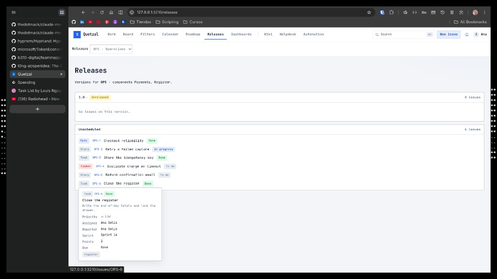

QUETZAL-UX-RELEASES-5 · 5 design directions for /releases · Pick a letter to implement
A
Release Calendar
Month/week calendar with release markers — see what ships today, this week, this month at a glance.
Problem it solves
Current /releases is a flat version list with no date affordance — you cannot see “what ships today” or spot a crowded release day. Teams coordinate deploys by date, not by scrolling a list. A calendar makes shipping cadence legible and surfaces release-day collisions early.
Tradeoffs
A monthly grid shows at most ~5 weeks and truncates names on busy days. Versions without a target date don’t appear (needs sidebar fallback). Not ideal when 90% of versions are unscheduled. Needs week + agenda sub-views for different workflows.
● TodayPaymentsRegister
Today · Sun Nov 1
OPS 1.0
6 issues · 3 done · 1 ip · 2 todo— ship review at 15:00
Sun
Mon
Tue
Wed
Thu
Fri
Sat
11.0 target6 iss
2
3
4
5
6
7
8
9
10
11
12
13
14
150.9 hotfix1 iss
16
17
18
19
20
21
221.14 iss
23
24
25
26
27
28
29
301.1-rccutover
1
2
3
4
51.2draft
B
Version Train Timeline
Horizontal date axis with release “trains” per component — see cadence, slips and overlap in one scan.
Problem it solves
Teams want to see release cadence: are we shipping every 2 weeks on Payments but every 6 on Register? Where did 1.0 slip from? The current flat list hides that rhythm. A timeline per component shows past vs planned releases and makes slips (dashed lines) obvious.
Tradeoffs
Needs horizontal real-estate; only ~6 time buckets fit without horizontal scroll. Each version must be anchored to a date (unscheduled falls off the chart). Harder to show scope — markers are compact. Component rows explode if you have 20+.
Version cards with progress rings + ship checklist — the release-manager’s cockpit.
Problem it solves
Current list shows the version is “Unreleased” but gives no sense of readiness: how many issues are done, how many bugs block ship, is QA signed off, release notes written. A ring + ship checklist per card answers “can we ship today?” in one scan — the single question release managers actually ask.
Tradeoffs
Dense card grid takes vertical space (6 cards ≈ 2 scrolls). Useless for long-tail archived versions — needs an “active only” filter. Ship checks require conventions (bug count, QA sign-off, notes field) that the data model may not yet enforce.
Shipped5Hotfixes1Points13Components2Lead-time17 dSlip+3 d
✓ Notes published✓ Tag v0.9✓ QA signed
D
Release Kanban
Three lanes — Unreleased → Releasing → Released — drag versions through the ship pipeline.
Problem it solves
Shipping a version is itself a workflow (freeze → QA → tag → deploy → announce), but today it’s binary: Unreleased or Released. A kanban makes the “in-flight” state (Releasing) explicit, forces WIP limits, and gives release managers a single board to run their standup from.
Tradeoffs
Adds a required workflow state (Releasing) to the data model. Three columns waste horizontal space on projects with 1 active version. Doesn’t show dates visually — pair with calendar (A) for date context.
PaymentsRegisterWIP in Releasing: 1 / 2
◢
Unreleased
2
1.1PlannedNov 22
4 iss1 done3 todo11 pts
Payments
1.2Plannedno date
2 iss0 done5 pts
Register
◢
Releasing
1
1.0In releasetarget today
6 iss3 done1 ip2 todo20 pts
PaymentsRegister
✓ Scope frozen! 2 open✕ Notes
◢
Released
2
0.9ReleasedOct 18
5 iss13 ptsLead-time 17dSlip +3d
PaymentsRegister
0.8ReleasedSep 20
4 iss9 ptsLead-time 12d
Payments
E
Changelog Wall
Chronological, product-changelog style wall — doubles as internal history and external release notes.
Problem it solves
The current list reads like a database dump — great for engineers, useless for a customer-success rep asking “what shipped last week?”. A Linear/Vercel-style changelog groups issues by version in reverse chronological order, with a left scrubber of all versions and a Today marker. Filterable by component for scoped “what’s new in Payments” exports.
Tradeoffs
Long-form layout — ~1 version per viewport — so poor for 30+ versions without pagination. Marketing-shaped titles need author input (not auto-derived). Does not surface in-flight work well; use alongside kanban (D) for operational views.
All versionsReleased only
FilterPaymentsRegisterBugs onlyStories only
▼ Today · Sun Nov 1, 2026
1.0
target Nov 1
Unreleased
PaymentsRegister
Checkout reliability + end-of-day register close
First GA release of the OPS stack. Hardens payment capture against double charges and retries, and locks the register down with a proper close-of-day flow.
50% · 3 / 6 done
Payments · epic OPS-1
OPS-2Retry a failed captureIn progress
OPS-3Store the idempotency keyDone
OPS-4Duplicate charge on timeoutTo do
OPS-5Refund confirmation emailTo do
Register
OPS-6Close the register (end-of-day totals, lock drawer)Done
0.9
Oct 18, 2026
Released
PaymentsRegister
Hardened capture + opening float
Prep release for 1.0 — foundational idempotency plumbing and the first register-opening screen.
Highlights
OPS-0.9aCapture retry queue (backoff + max 3)Done
OPS-0.9bRegister opening float inputDone
OPS-0.9cFix: refund rounding off by 1¢Done
0.8
Sep 20, 2026
Released
Payments
Payments MVP
First payments slice: card + cash, single-currency, no refunds yet.
OPS-0.8aStripe adapter + webhook retryDone
OPS-0.8bCash drawer basic modelDone
Comparison — A through E
Concept
Best for
Shows date?
Shows readiness?
Shows cadence?
Doubles as release notes?
Risk / gap
A — Release Calendar
Daily “what ships today” standup, release-day collisions, cross-team ETA
Yes — full month grid
Only via pill color
Visible across the month
No
Unscheduled versions hide in sidebar; dense days truncate
These compose well: A (calendar) + D (kanban) covers daily release-manager work;
B (train) + C (readiness) covers portfolio planning;
E (changelog) always layers on top as the output. Pick a primary letter — or a combo like
A+C as tabs — and we’ll build it.
ABCDE
Reference — Current /releases
Screenshot of the live /releases page these concepts aim to improve: flat version list + unscheduled issues, no date affordance.

(Screenshot not found — see attached image in ticket)